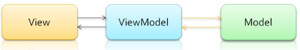

MVVM（Model-View-ViewModel）框架的由MVP（Model-View-Presenter）模式与WPF结合演变过来的一种新型架构框架。
三层结构 Model：数据层 View：视图层 View-Model: 数据模型层

viewModel可以调度view，也可以调度model View和model是分离的 交互实现 View想用mode数据，要通过viewmodel读取 Mode的变化想更改view，要通过viewmodel